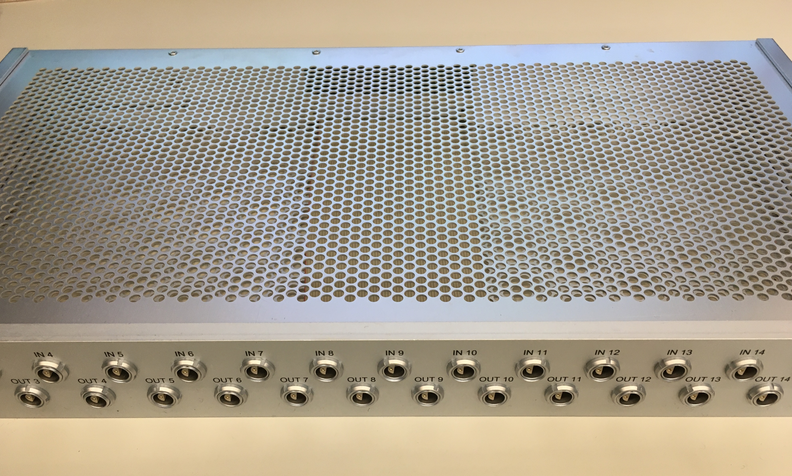
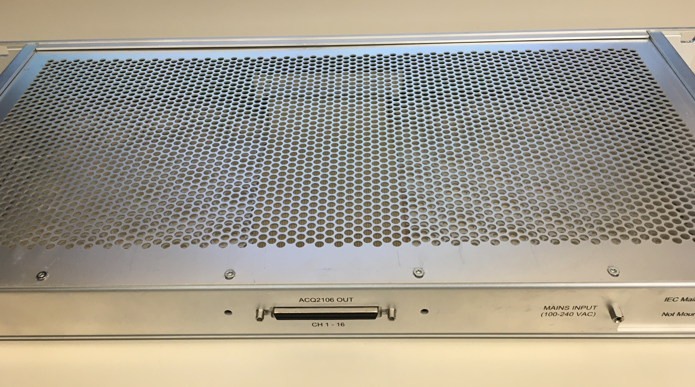
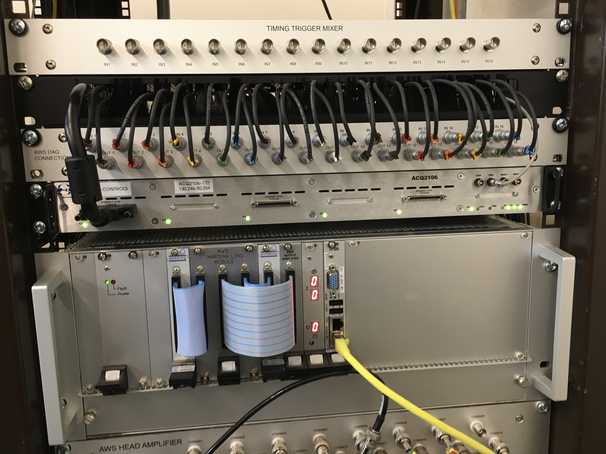
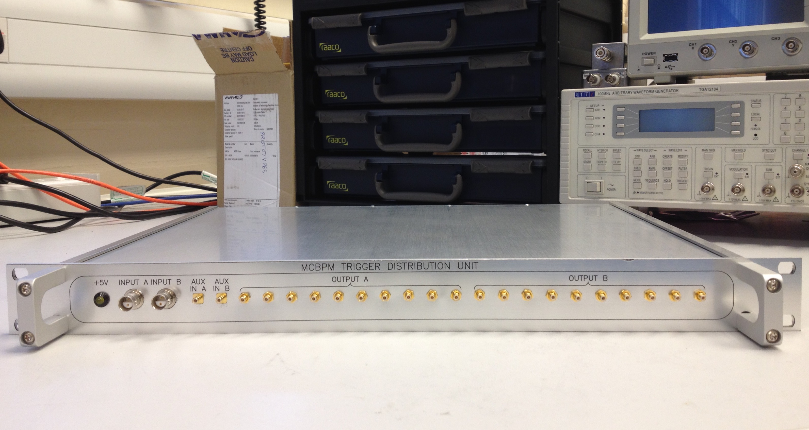
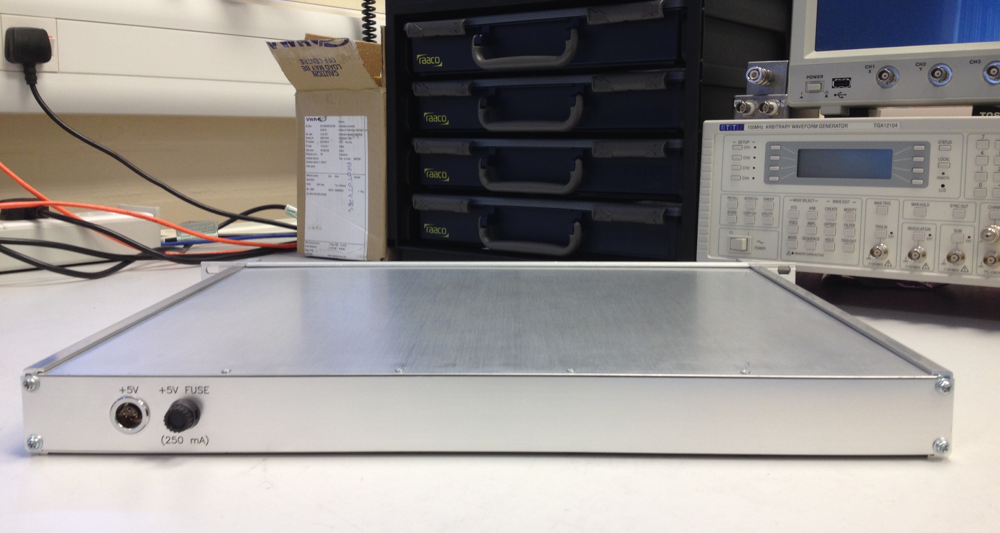
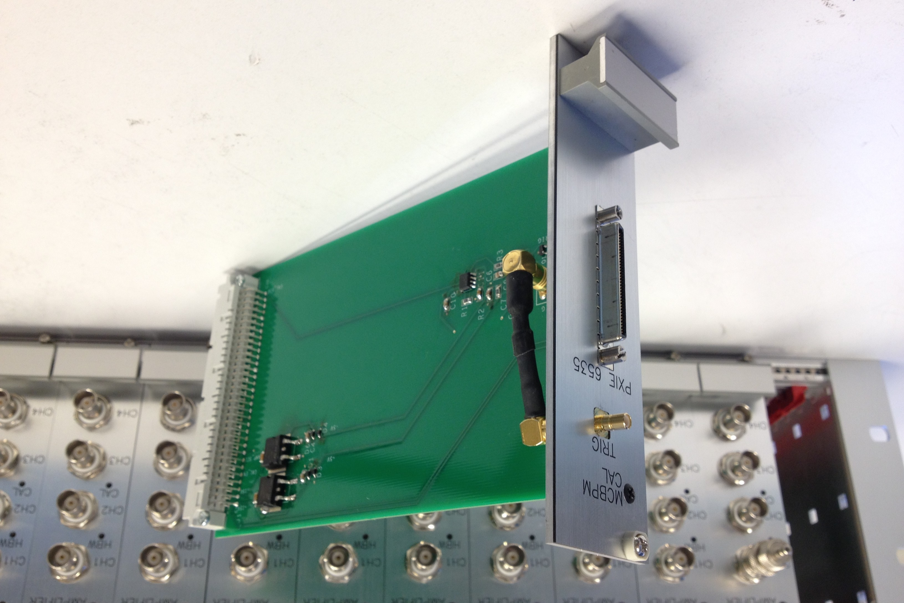
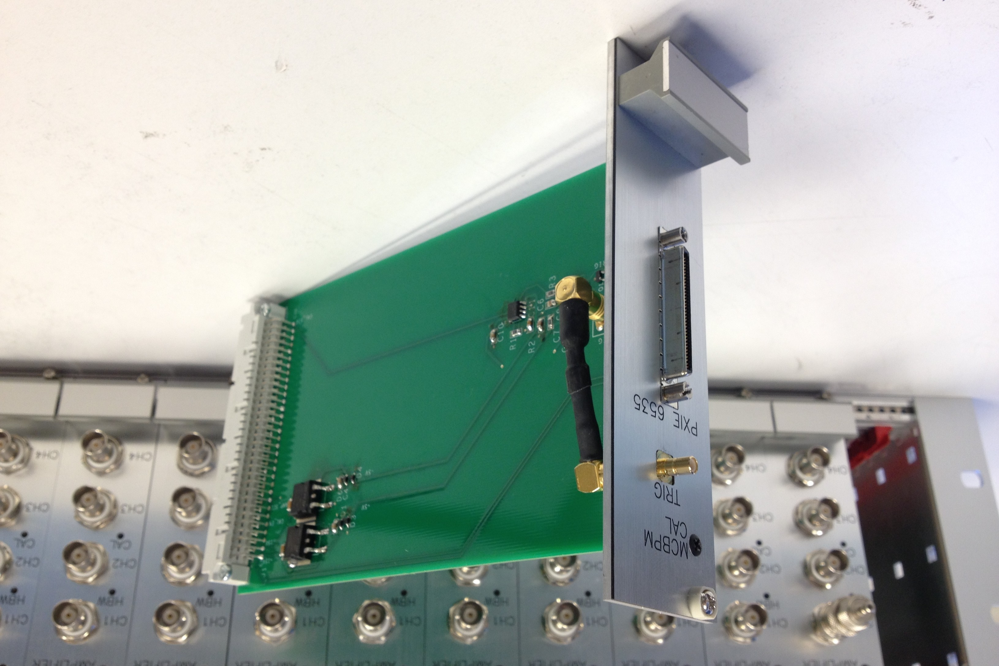

Bipolar ADC driver
Single channel ADC front-end for driving medium speed, 16-bit SAR ADCs from a bipolar input.

Features
- Default level translation: +/-12 V -> 0 - +5 V.
- 15 MHz bandwidth.
- 50 ohm or high input impedance (10^13 ohm).
- Low noise/distortion: Vn = 4 μVp-p, THD + N = 106 dB.
- High CMRR: 80 dB.
- Select on-board (+5 V) or external voltage reference, for configurable ranges.
Pmod Pulse
Configurable dual channel digital output for driving lengths of terminated coaxial cable from microcontrollers / FPGAs.

Features
- Up to 2 digital outputs on SMA connectors.
- TTL output levels.
- Up to 256 mA max. output current capability (configurable with zero-ohm resistors).
- Optional AUX output (configurable with zero-ohm resistors).
- Optional back termination resistors for double-ended or series termination.
- 6-pin Digilent Pmod Interface Specification compatible.
Dual Voltage Regulator
Dual fixed voltage regulator module based on LM78XX / LM79XX.


Features
- +7-38 V input -> +5-24 V output, -7-30 V input -> -5-15 V output.
- Output current: up to 1.5 A.
- Voltage regulators: 1 x LM78XX, 1 x LM79XX.
- Reverse voltage protection.
- On board and external power LED indicators.
Data Acquisition Connection Unit
Multi-channel signal connection unit designed for a data acquisition system at a scientific facility.
  
Features
- 1U, 19" rack mount aluminium chassis.
- Designed for +/- 10 V differential input signals.
- x16 inputs (dual pin LEMO connectors) on front.
- x16 outputs (dual pin LEMO connectors) on front.
- x16 outputs (68 way SCSI connector) on rear.
- Transient protection on all inputs (bi-directional TVS diodes: +/-30 V clamp, 1.5 kW peak pulse).
- Optional IEC mains inlet connector, if internal power is required.
Trigger Distribution Unit
Bespoke unit for distributing timing triggers for an ion detector data acquisition system.
 
Features
- 1U, 19" rack mount aluminium chassis.
- Fan-out two independent differential trigger inputs (BNO connectors) to x8 single-ended outputs (SMB connectors).
- Optional single-ended AUX inputs (SMB connectors).
- Buffered outputs for driving TTL levels into 50 ohm loads.
- +5 V power LED indicator.
- Fused +5 V external power input on rear (LEMO connector).
Current Amplifier Eurocrate
Modular 4 channel current amplifiers in Eurocard format for an ion detector data acquisition system.
 


Features
- Transimpedance gain of 3000.
- Relay selectable 10 kHz or 30 MHz bandwidth.
- 50 ohm input impedance.
- Up to 40 channels in a Eurocard crate.
- Pulse generator card with external trigger for testing and calibration.